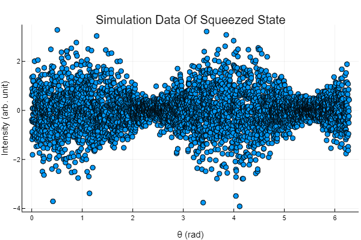

QuantumStateDistributions
Documentation for QuantumStateDistributions.
Installation
The package can be installed with the Julia package manager. From the Julia REPL, type ] to enter the Pkg REPL mode and run:
pkg> add QuantumStateDistributionsQuick start
Construct a squeezed state via QuantumStateBase.jl and declare its quantum state distribution.
julia> using QuantumStateDistributions, QuantumStateBase
julia> r, θ, dim = 0.8, π/2, 100;
julia> ρ = SqueezedState(r, θ, Matrix, dim=dim)
100×100 Matrix{ComplexF64}:
0.7477+0.0im 0.0+0.0im … -1.77607e-24-5.91946e-10im 0.0+0.0im
0.0+0.0im 0.0+0.0im 0.0+0.0im 0.0+0.0im
-2.14974e-17+0.351079im 0.0+0.0im 2.77945e-10-8.16923e-25im 0.0+0.0im
0.0+0.0im 0.0+0.0im 0.0+0.0im 0.0+0.0im
⋮ ⋱
0.0+0.0im 0.0+0.0im 0.0+0.0im 0.0+0.0im
-1.77607e-24+5.91946e-10im 0.0+0.0im 4.68637e-19+0.0im 0.0+0.0im
0.0+0.0im 0.0+0.0im 0.0+0.0im 0.0+0.0im
julia> d = GaussianStateBHD(ρ);Sample a point from the quantum state distribution in intensity-to-measurement-phase quadrature coordinate measured by balanced homodyne detection:
julia> rand(d)
2-element Vector{Float64}:
0.8420476666965236
1.6008878775912423Sample n points from the quantum state distribution:
julia> rand(d, 4096)
2×4096 Matrix{Float64}:
0.0018714 0.0034182 0.00403972 0.00780472 … 6.27393 6.27811 6.27884
-0.706334 -1.16179 -0.195581 0.174201 -0.60763 0.853457 -0.217017
Index
APIs
QuantumStateDistributions.GaussianStateBHD — TypeGaussianStateBHDA Gaussian state distribution in intensity-to-measurement-phase quadrature coordinate measured by balanced homodyne detection.
Example
julia> using QuantumStateBase
julia> d = GaussianStateBHD(SqueezedState(0.8, π, Matrix, dim=100));
julia> points = rand(d, 4096);